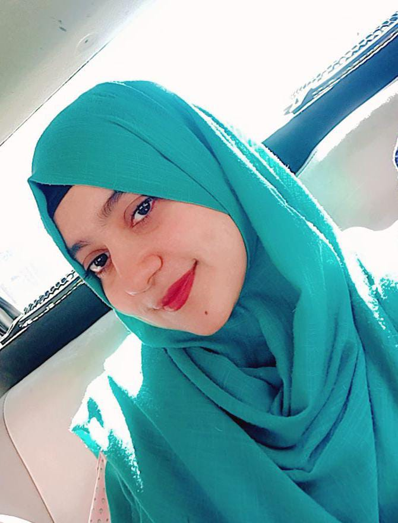

Radiya Khan
Frontend Web Developer
Radiya khan, 19-year-old. Recently I complete my second year with
commerce. Now I learning skills by enrolling in GIAIC IT course.
This exciting journey has equipped me with a solid foundation in web
development, including HTML, CSS, TypeScript, and JavaScript.
Currently, Im diving deeper into Next.js to create seamless and
scalable web applications.Through GIAIC program, Ive gained valuable
insights and expertise that have opened doors to new opportunities.
Im eager to continue learning, exploring, and adapting to the
ever-evolving tech landscape. With each new skill and experience, Im
confident in my ability to make a meaningful impact in the digital
world.

Profile
Radiya khan, 19-year-old. Recently I complete my second year with
commerce. Now I learning skills by enrolling in GIAIC IT course.
This exciting journey has equipped me with a solid foundation in
web development, including HTML, CSS, TypeScript, and JavaScript.
Currently, Im diving deeper into Next.js to create seamless and
scalable web applications.Through GIAIC program, Ive gained
valuable insights and expertise that have opened doors to new
opportunities. Im eager to continue learning, exploring, and
adapting to the ever-evolving tech landscape. With each new skill
and experience, Im confident in my ability to make a meaningful
impact in the digital world.
Education/Learning
2020-2022
MATRICULATION(Biology)
2022-2024 INTERMEDIATE(Commerce)
2024-Present
IT Course from GIAIC
Personal information
Father name: Shahzad Khan
Age: 19
Date of birth: April 3rd, 2005
Gender: Female
City: Karachi
Nationality: Pakistani
Province: Sindh
Marital Status: Single
Skills
Ms Word
HTML
CSS
TypeScript
Next Js
Tailwaind CSS